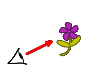

Die Ausbreitung des Lichtes erfolgt geradlinig und mit Lichtgeschwindigkeit in einem Medium wie Glas, Luft oder Vakuum. Meistens kann der Weg des Lichtes nicht gesehen werden, doch es gibt Außnahmen:
[7]
Hier ist der Lichtweg der Sonne aufgrund der hohen Abdeckung des Lichtes durch die Baumkronen gut erkennbar: Die Lichtstrahlen breiten sich geradlinig aus. Außerdem, hier nicht zu erkennen, strahlt die Sonne ihr Licht in alle Richtungen aus. Bedeutet die Lichtstrahlen bewegen sich von der Sonne aus nicht nur zur Erde, sondern auch zum Mond und zu anderen Himmelskörpern, welche auch auf einer anderen Seite der Sonne sich befinden können. [8]
Licht breitet sich geradlinig und nach allen Seiten hin aus.
Sehvorgang
| Falsche Vorstellungen im Altertum
Bereits im Altertum machten sich Naturforscher Gedanken darüber, wie wir Menschen die Welt um uns herum wahrnehmen können. Pythagoras (ca. 570-480 v.Chr.) erklärte sich dies mit vom Auge ausgehenden Sehstrahlen, die von kalten Körpern "zurückgedrängt" wurden. Daraus ergaben sich eine Reihe Redewendungen, welche auf diese Zeit zurückgehen:
|  |
| Ptolemäus (ca. 100-160 n. Chr.) widersprach der Theorie, da diese, durch die Annahme des Ausschicken von Sehstrahlen, vorgibt, auch im Dunkeln sehen zu können. Er vermutet zweierlei Strahlen, durch deren Zusammenwirken das Sehen erst ermöglicht wird: die Sehstrahlen, die vom Auge ausgehen, und die Lichtstrahlen, die von Lichtquellen ausgehen. Zur richtigen Vorstellung mit Lichtsender und Lichtempfänger gelangte die Menschheit erst etwa im 17. Jahrhundert. [9] |  [10]
[10] |
| Sehvorgang Das Auge ist ein Lichtempfänger. Nur wenn Licht von einem Gegenstand aus in das Auge fällt, ist dieser sichtbar. Das Auge und Gehirn verarbeiten dann dieses Signal zu dem Bild, welches wir wahrnehmen können. Das empfangene Licht kann von einer Lichtquelle, also ein selbstleuchtender Gegenstand, wie der Sonne oder einer LED, oder von einem beleuchtetem Gegenstand, welcher das Licht einer Lichtquelle in das Auge umleiten muss, wie Mond oder einer Blume, ausgehen. [11] |
 [12]
[12] |
Lichtbündel und -stahlen
Arten von Lichtbündel
| parallele Lichtbündel | divergente Lichtbündel | konvergente Lichtbündel |
|---|---|---|
| sind Lichtbündel, welche ihre Breite nicht ändern. Dies kommt sehr selten in der Natur vor. | sind Lichtbündel, welche in die Ausbreitungsrichtung auseinanderlaufen. | sind Lichtbündel, welche in die Ausbreitungsrichtung ineinanderlaufen. |
 |
 |
 |
Lichtstrahlmodell
Einen idealen Lichtstrahl mit verschwindendem Durchmesser gibt es in der Realität nicht, wehshalb es nur eine Modellvorstellung ist. Man kann mit Hilfe von Verkleinerung eines Lichtbündels ein extrem feines, nahezu paralleles Lichtbündel eine gute Annäherung erreichen, aber nie den idealen Lichtstrahl. [15]
Schatten
Schatten ist:
- die unbeleuchtete Fläche eines Gegenstandes
- die mittels einer Lichtquelle erzeugte Projektion eines Gegenstandes auf weiteren Gegenständen
- allgemeiner der gesamte unbeleuchtete Raum hinter einem beleuchteten Körper
physikalische Größen:
- Schirmabstand
- Objektabstand
Simulation nicht realistisch!
| Anzahl Lichtquellen: | Fehler! |
|---|---|
| Verschiebung X: | Fehler! |
| Verschiebung Y: | Fehler! |
| Größe: | Fehler! |
| Position X Lichtquellen | Fehler! |
Unter Schatten versteht man eine unbeleuchtete bzw. nicht direkt beleuchtete Fläche an z.B. einer Wand, sowie den nicht direkt Schatten entsteht, wenn sich ein lichtundurchlässiges Objekt zwischen eine Lichtquelle und den Schirm stellt. Das Objekt absorbiert das Licht und es entsteht ein lichtfreier Raum zwischen dem Objekt und dem Schirm. Der Schatten ist der Bereich, indem kein Licht fällt. Man unterscheidet die Lichtquellen in Punktlichtquellen, mehreren Punktlichtquellen oder diffusen Lichtquellen [17]
Stoffverhalten
| Kategorie | Absorption | Durchlassen von Licht |
|---|---|---|
| Beschreibung | Wenn ein Lichtstrahl auf einen stark absorbierenden Gegenstand trifft, kehrt der Lichtstrahl nicht zurück. | Wenn ein Lichtstrahl auf ein durchsichtigen Gegenstand trifft, breitet er sich unverändert durch diesen Gegenstand aus. |
| Erklärung | Dies hängt mit der Obeeflächenstruktur des Stoffes ab. Ist diese sehr fein, verliert sich das Licht im Stoff und wird nicht zurückgegeben |
|
| Auswirkungen | Fast alle Gegenstände absorbierenden einen Teil des auftreffenden Lichtes, manche absorbieren mehr und geben daher weniger Licht wieder zurück
und erscheinen dadurch dunkler, andere absorbieren weniger und geben daher mehr Licht wieder zurück und erscheinen heller. Manche Gegenstände absorbieren nur bestimmte Lichtsorten (Farben). Die Gegenstände erscheinen in den Restfarben. Absorbiert ein Gegenstand Licht, so erwärmt er sich dadurch. |
Durchsichtige Gegenstände verursachen keinen Schatten. Vollkommen durchsichtige Gegenstände können nicht gesehen werden, aber alle Gegenstände hinter dem durchsichtigem Körper. Einige Gegenstände ändern je nach Einfallswinkel des Lichtes dessen Ausbreitungsrichtung, ohne es zu schwächen. Diese Gegenstände nennt man trotzdem durchsichtig. Gelangt nur ein geringer Teil des Lichts durch einen Körper, so nennt man ihn durchscheinend, da man Gegenstände durch solche Körper nicht mehr klar erkennen kann. |
| Darstellungen |  |
 |
| regelmäßige Reflexion | unregelmäßige Reflexion | |
 |
 |
Häufig treten mehrerer dieser genannten Phänomene gleichzeitig auf. Ein Stein z.B. absorbiert ein Teil des Lichtes und streut den anderen Teil.
Strahlensatz
Bei einem von einer Punktlichtquelle ausgehendem, divergenten Lichtbündel sind die Entfernung g von der Quelle und die Breite B des Lichtbündels direkt proportional zueinander.
= bzw. = const. = Fehler!
Lichtgeschwindigkeit
Die Ausbreitungsgeschwindigkeit von Licht nennt man Lichtgeschwindigkeit. In Formeln wird die Lichtgeschwindigkeit meist mit einem c abgekürzt
| cVakuum | 300 000 |
|---|---|
| cLuft | 299 711 |
| cWasser | 225 000 |
| cFlintglas | 186 000 |
| cVakuum | 300 000 |